Chapters 1–7 built and validated the frozen IFRS 9 ECL engine; Chapter 8 opened up the
LangGraph agent that answers questions about it. This chapter is the third leg: the actual product a bank
risk analyst opens in a browser. Per notes/plan/requirement_11_app_guide.md (binding, supersedes
the lighter "tour" framing this chapter might otherwise have taken), the law here is
mechanical completeness, not narrative — the coverage checklist below was derived FROM THE
CODE this session (the TABS array in app/ui/src/app.jsx; every
Panel/heading/EXHIBIT kicker in the six app/ui/src/tabs/*.jsx files and the shared
components they compose; every image enumerated via /api/exhibits/list,
/api/freddie/exhibits, the two consultant-curated exhibit lists, plus the MDD static mount) and a
reviewer is expected to re-derive the same list independently and diff it against what follows. Every panel
below gets the same six-part treatment requirement 11 mandates: what it shows, how to read it, how to use
it (including what does not change), its AI affordances, a rendered visual, and its gotchas.
Before the exhaustive walk, the fast path — what a first-time visitor should actually do, in order, to understand what this app is:
tabFromHash() falls back to
'executive'). Read the four KPI tiles top-left to right: allowance, coverage, Jensen ratio,
reporting date. This is the headline number a credit committee asks for first.GET /api/ecl/summary payload that drove the tiles above it — a sanity-checked narrative, not a
second, independently-fallible source.POST /api/agent/ask call with a code-generated recap of the
exact numbers that panel is showing, and answers GROUNDED (cited to a tool) or REASONED (cited interpretation,
no fresh number) inline, never a modal.One FastAPI process (app/api/main.py) serves both the JSON API and the built Preact/ECharts SPA
from a single origin — docs/api_contract.md's very first convention is "no CORS anywhere" because
there is only ever one origin to begin with. Three route groups, registered in an order that matters
(Starlette matches in registration order, so the more specific static mounts must win before the catch-all
SPA mount):
| Route group | Serves | Guard |
|---|---|---|
/api/* (22 endpoints) | JSON — engine reads, Tier-1 tool calls, agent ask/stream, The Model / Policy / Real Data / auto-interpret endpoints | always registered first |
/static/exhibits/*, /static/freddie/*, /static/mdd/* |
read-only PNG/HTML mounts over outputs/, outputs/freddie/,
outputs/mdd/ | each if <dir>.exists() guarded — a missing directory
404s harmlessly rather than crashing app boot |
/ (catch-all) | the built SPA, app/ui/dist, mounted LAST with
html=True so client-side hash routing works on refresh | falls back to a plain "not built
yet" HTML response if dist/index.html is missing |
The SPA itself is a hash router with no routing library (app.jsx's own comment: "Simple hash
router — no router library, per the north-star build spec"): TABS is a 6-element array
(executive, model, scenario, policy, freddie,
copilot), location.hash drives tabId, and Left/Right arrow keys cycle
tabs when a tab button has focus (onTabKeyDown). Two floating elements sit OUTSIDE the six
per-tab bodies and are shared app-wide: SelectionExplain (any tab, highlight text anywhere in
.app-main) and MiniChatDock — rendered on every tab EXCEPT Copilot
({tabId !== 'copilot' && <MiniChatDock />}, i.e. Executive, Model, Scenario, Policy
AND Real Data — five tabs, not "tabs 1-4" as the component's own top comment claims; a small
code/self-documentation drift, harmless but worth knowing if you go looking for it, noted again as a
component-level gotcha in §9.9).
meta state ({meta.as_of.period} · {n_loans} loans · {balance} book) is fetched ONCE
at app mount via its own getSummary() call in App(), independently of whatever the
active tab fetches. In practice both calls hit the same frozen GET /api/ecl/summary endpoint and
so always agree (the engine is frozen, not live-changing), but architecturally they are two separate HTTP
round-trips, not one shared cache — worth knowing if you are ever debugging a stale-header report.
app/ui/src/tabs/ExecutiveTab.jsx — "the consultant's headline read of the book as reported."
Six panels/panel-groups, all fed by a single GET /api/ecl/summary call except the two chart
panels at the bottom which fetch their own endpoints.
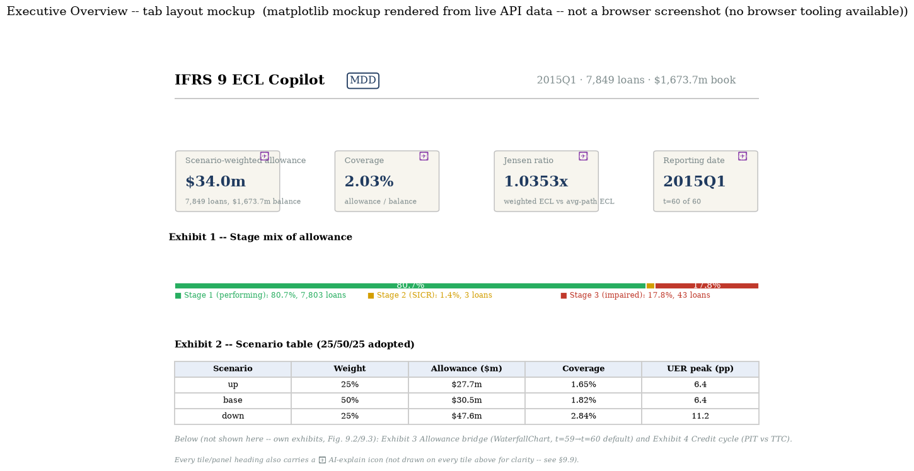
GET /api/ecl/summary
call, 2026-07-19.StatTile.jsx, unnumbered)GET /api/ecl/summary:
weighted_allowance (raw USD, UI divides by 1e6), coverage (a ratio, UI multiplies by
100), jensen_ratio (a ratio, shown as "×"), and as_of.period/as_of.t.StatTile.jsx) with a panel-specific recap — e.g. the Jensen-ratio tile's question recaps
"Jensen ratio is 1.0353× — scenario-weighted allowance \$34.0m vs allowance at the averaged macro path
\$32.9m." Full mechanics in §9.9.StageMixBar.jsx)GET /api/ecl/summary, fields
stage_mix.{stage1,stage2,stage3}.{n_loans,allowance,allowance_pct_of_total} —
allowance_pct_of_total is already 0–100 scale, never re-multiplied.GET
/api/ecl/summary payload as the tiles/bar above it. The component's own top comment is explicit:
"Template narrative — NOT an LLM call... this is consultant prose with blanks filled in, per the north-star
spec ('template, not LLM')." This is the one panel in the app that is guaranteed never to hallucinate anything,
by construction — it cannot invent a number because it has no generative step at all.buildExplainQuestion passes recap: narrative(summary) verbatim) — clicking ✦ here
effectively asks the agent "does this paragraph hold up," a genuine cross-check of the template prose against
the agent's own independently-grounded read.analyze_data (Tier-2, Chapter 8) is for,
not this panel.ScenarioTable, inline component)GET /api/ecl/summary's
scenarios[] array: weight, allowance (\$m), coverage (%), UER peak (pp). A leading coloured dot
per row (FINAL_SPEC §5.3/§1.3 convention) — up=good, base=neutral, down=critical — carries STATUS semantics,
same discipline as the stage-mix bar.WaterfallChart.jsx, shared component)WaterfallChart is invoked with fixed props
t0={59} t1={60} action={null} — the LATEST single quarter, per the component's own comment
("Default window = the latest single quarter (FINAL_SPEC §8.2) — long cumulative windows... are a Scenario
Lab drill-down, never the executive default"). Endpoint: GET
/api/ecl/waterfall?t0=59&t1=60, six components (opening/stage_migration/remeasurement/
derecognitions/new_loans/closing) that sum exactly (identity_gap ≈ 0).⊞ icon top-right toggles chart↔table view (same six rows, tabular).
No sliders here — this is a FIXED historical exhibit.recapFor(wf)), never
hand-typed.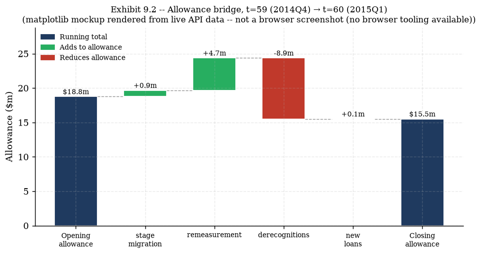
GET /api/ecl/waterfall?t0=59&t1=60 call, 2026-07-19.CreditCycleChart.jsx)GET /api/exhibits/credit_cycle, fields rho and points[].{calendar,
z, observed_dr, ttc_pd, pit_pd}, all rate fields ratios (UI multiplies by 100).⊞ chart↔table toggle as the waterfall. No sliders — a static
60-quarter exhibit (the LIVE version of this same curve, with adjustable Z and ρ sliders, is a widget in
Chapter 5's notes, not in this app).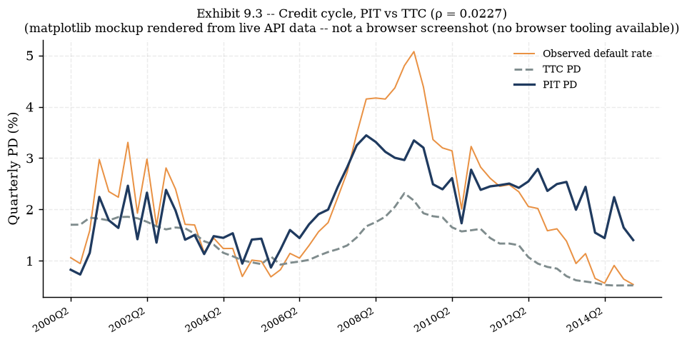
GET /api/exhibits/credit_cycle call, 2026-07-19.app/ui/src/tabs/ModelTab.jsx — "Coefficients, fit statistics, and the variable dictionary —
with the honest caveats." One intro panel plus six numbered exhibits, all Requirement 12 additions
(interpretation fields, macro glossary, FRED badges) layered onto the original coefficient tables.
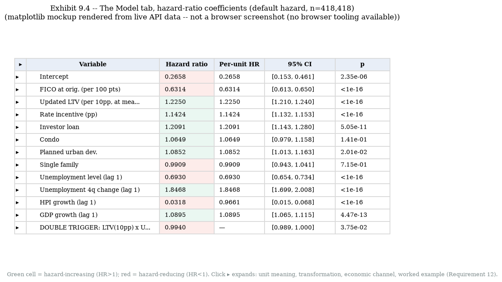
GET /api/model/coefficients call, 2026-07-19.HowToReadCoefficients.jsx, shared with Real Data)<details> intro panel (no engine numbers, no explain
question needed beyond its own title) stating four rules once so neither this tab nor Real Data has to
re-derive them: (1) every model here is a discrete-time CLOGLOG hazard, so exp(coef) is a
genuine hazard ratio — Chapter 3's link derivation, referenced not repeated; (2) "1 unit" is not always
"1" (FICO is /100, LTV is /10 — read the row's own Unit line); (3) the 0.01-vs-1pp gotcha for
log-growth macro rows (table HR is scaled to a full 1.0 log-unit ≈ 100% quarterly growth, never observed —
the Per-unit HR column fixes this, computed as hazard_ratio ** 0.01); (4) only
GENUINELY FRED-pulled rows (state-level, Real Data tab) carry a FRED badge — the national DCR rows are a
vendor-premerged series on the panel's own anonymized clock, calendar-verified against FRED UNRATE
(corr 0.996) but not a live pull.<details>/<summary> expand/collapse, no JS.buildExplainQuestion prop passed (the
one deliberate exception across this tab; the component's own comment states why: "no engine numbers -- so it
needs no explain-question recap beyond the panel's own title").CoefficientsTable, inline component)GET /api/model/coefficients, fields
models.{default,prepay}.coefficients[].{variable, family, hazard_ratio, ci, p, p_display, story}
plus the Requirement 12 interpretation fields (unit_meaning, transformation, lag, fred_series,
economic_channel, hazard_ratio_per_unit, worked_example).null — a product term has no single legible per-unit reading, see the
worked example instead).actions slot swaps the whole table's data source — clicking a row's ▸ toggle expands an
InterpretationRow beneath it (Unit, Transformation, Economic channel, Worked example, plus a FRED
badge if genuinely FRED-sourced — none are, on this DCR tab). Each row's toggle state is independent
(useExpandableRows, a per-table Set).p column separately.FitStats, inline component)fit_stats.{net_uer_effect_note, double_trigger_note,
seasoning_peak}.GET
/api/model/coefficients), no model-switch control of its own (it always shows both rows at once).exhibit-grid of every consultant-curated PNG whose id starts with
hazard_, filtered client-side from GET /api/exhibits/list's 17-row payload:
hazard_age_baseline ("Fitted natural-cubic-spline age baseline of the default hazard") and
hazard_pd_term_structure ("Lifetime PD term structure implied by the fitted hazards")./static/exhibits/hazard/age_baseline.png and /static/exhibits/hazard/
pd_term_structure.png — the same seasoning-hump curve Chapter 3's notes derive in full and the
same PD term-structure Chapter 2's ECL formula sums over.ExhibitImage.jsx lazy-loads each PNG and
swaps to a "exhibit unavailable" placeholder on a 404 (never a broken-image icon).GET /api/exhibits/list in the codebase (it is called from exactly one file,
ModelTab.jsx) shows only ONE other id-filtered grid is ever built from it — the 3
lgd_ rows, this tab's own Exhibit 6. The staging_stage2_sensitivity row's PNG
IS shown elsewhere (Policy's Exhibit 1, §9.6) but reached via a wholly separate endpoint
(GET /api/policy/staging_sensitivity's own image_url field, which happens to point at
the identical staging/stage2_sensitivity.png) — not via this catalog. That leaves 11 of the 17
rows — staging_stage_distribution and all 3 scenario_*/1 vasicek_*/6
eda_* rows — with no UI consumer anywhere in the shipped app (verified by
grepping every id and PNG path across app/ui/src/ and app/api/main.py: no other hit).
They are real, servable catalog entries — /api/exhibits/list returns all 17 correctly and every
PNG resolves under /static/exhibits/ — but orphaned in the current product, not merely
under-documented by this chapter.SearchableTable)GET /api/model/variable_dictionary, a preamble string plus rows[] (raw
markdown-lite source cells, rendered as-is — backtick-quoted variable names, ✓/⚡/↑/↓ glyphs included
verbatim).fico_s = FICO_orig_time / 100, lag
"static (origination)", rationale "Ability/willingness to pay", expected sign "PD ↓", fitted/verified
"✓ negative", consumed by "default hazard; LGD cure." Row 2: ltv10 ⚡ (the lightning-bolt flags a
documented CURRENT-quarter exception to the lag convention — collateral value is a real-time state, not a
forecast), = updated_ltv/10, rationale "Equity cushion / strategic-default trigger," expected
sign "PD ↑, severity ↑, cure ↓," fitted/verified "✓ all three." The preamble states the data window in full:
t=1..60 ≙ 2000Q2–2015Q1 (calendar-anchoring verified vs FRED UNRATE, corr 0.996), train=t≤40, OOT=t=41–60.SearchableTable) filters rows by substring match
across every column — try "uer" or "ltv"; a live row-count readout ("N / 13 rows") confirms the filter took
effect.loan_age — a spline basis, not individually interpretable; gdp_lag1 /
gdp_growth_lag2 — a single dictionary row conflating two different lags feeding two different
models (the DCR hazard's own GDP-growth row DOES carry a real per-unit HR, §9.4 Exhibit 1 — it is this
merged dictionary row specifically that declines to pick one); lgd_time (target) — an
LGD target, not a regressor; Z_t (recovered) — the satellite's dependent variable;
Scenario paths — a set of forward paths) — their hazard_ratio_per_unit and
worked_example fields are both explicitly null, not a data-loading bug. (A sixth row,
dt_ltv_uer, has a null hazard_ratio_per_unit too but — unlike these five — still
carries a prose worked_example pointing at the fit-stats double-trigger decomposition instead.)details + SearchableTable)GET /api/model/macro_glossary, 10 rows.dcr_uer_level ("National
UER — level"), FRED ID null, geography "US national," lag "1 quarter," lag rationale states plainly
this is "NOT a live FRED pull — a vendor-premerged national series on the DCR panel's own ANONYMIZED quarterly
clock; only the clock's CALENDAR alignment... was verified, via correlation against FRED UNRATE (corr 0.996)
— an anchoring check, not a sourcing claim." Contrast sflld_uer_level ("State UER — level"),
FRED ID {POSTAL}UR (a literal template — one series per state postal code), lag "1 month" (the SFLLD
panel's native monthly clock vs DCR's quarterly), which used_by "SFLLD champion hazard" only. The tenth row,
coherent_shock_convention, carries no series-level facts at all (geography/frequency/lag all
"n/a") — it documents the shock_macro tool's own co-moving-shock convention (Chapter 8,
§8.2) as a glossary entry in its own right, because the satellite has no unemployment term to shock directly.<details> (default closed, "Macro data glossary (10
series)" summary) + the same free-text search box pattern as the variable dictionary.dcr_* row and satellite_hpi_growth carry fred_series: null — the
DCR/national panel is NOT a live FRED pull, only calendar-anchored against one. Only the three SFLLD/state rows
(sflld_uer_level, sflld_uer_momentum, sflld_hpi_growth) and their FRED
IDs are genuinely live-pulled by freddie/macro.py. Reading a `null` FRED badge as "missing data"
rather than "genuinely not a FRED
pull" is exactly the misread this row-level honesty labeling exists to prevent.LgdSection)SearchableTables (cure-stage logit coefficients, severity-stage OLS/HC1
coefficients, 5 rows each), and a 3-image exhibit grid. Endpoint: GET /api/model/lgd.gap_pred_minus_real.oot), vs essentially zero gap in-sample (−0.05pp) — the model over-states
severity in the GFC-aftermath OOT window. Cure-stage coefficients: ltv10 coef −0.764 (odds ratio
0.4658, p≈0 — higher LTV sharply lowers the odds of curing, matching the equity-cushion story). Severity-stage:
ltv10 coef +0.1074 (p≈0 — higher LTV raises severity conditional on non-cure).lgd_
(lgd_calibration_ltv, lgd_cure_by_ltv, lgd_distribution — the bimodal
realised-LGD histogram motivating the two-stage model in the first place).app/ui/src/tabs/ScenarioLabTab.jsx — "Parameterise the four Tier-1 engine tools — every
number is computed by the frozen engine; the agent only routes, validates and narrates." Four control panels
on the left, a result/interpretation card and a reactive waterfall on the right.
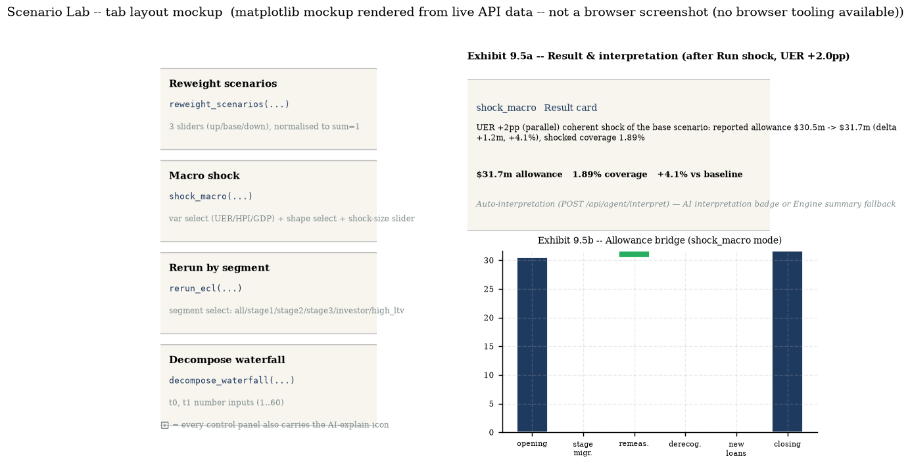
shock_macro("UER", 2.0, "parallel") live
— rendered from a live POST /api/tools/shock_macro call, 2026-07-19.norm), live-labeled with the normalised percentage next to each
slider.POST
/api/tools/reweight_scenarios with the three normalised weights (body must sum to 1 within 1e-6; the
UI's own normalisation guarantees this). Nothing else on the page changes until you click Run — the sliders
themselves are inert previews of what WILL be sent.sum === 0
guard) — there is no "0/0/0" degenerate call possible from the UI, though the underlying tool would reject it
with 422 (weights must sum to 1) if it somehow reached the API.SHOCK_BOUNDS: UER ±10pp, HPI/GDP ±5pp/q — the
same pydantic bounds Chapter 8's ShockMacroArgs enforces server-side, mirrored client-side so
an invalid drag is never even possible). A caveat box states the coherent-shock convention inline, every time.POST
/api/tools/shock_macro. Live capture, UER +2.0pp parallel: baseline allowance \$30.5m → shocked \$31.7m
(delta +\$1.24m, +4.07%), coverage 1.82% → 1.89%. The co-moving deltas applied alongside the named UER
shock: HPI growth −0.826pp/q, GDP growth −0.109pp/q (both negative — a rising-unemployment shock coherently
drags house-price and GDP growth down too, the DFAST severe scenario's own direction).all, stage1, stage2, stage3, investor,
high_ltv (current updated LTV > 80).POST /api/tools/rerun_ecl. This
is a pure FILTER-AND-SUM over already-computed per-loan scenario ECL — no re-run of the hazard/LGD/EAD models,
despite the tool's name.decompose_waterfall below.docs/api_contract.md itself publishes.POST
/api/tools/decompose_waterfall. This reruns the movement-decomposition identity between ANY two panel
snapshots, not just the default t=59→60 the Executive tab shows.DecomposeWaterfallArgs
bound, reachable here too since this UI control posts to the same endpoint the agent's Tier-1 tool calls.ResultCard + Interpretation.jsx)headline string, a metrics strip (allowance, coverage, Jensen ratio,
delta-vs-baseline — whichever fields the specific tool's result carries), and an auto-interpretation card
fed by POST /api/agent/interpret.interpretation = "UER +2pp (parallel)
coherent shock of the base scenario: reported allowance \$30.5m -> \$31.7m (delta +1.2m, +4.1%), shocked
coverage 1.89%. The shocked allowance is 31694012.25." with grounded: true, mode: "llm" —
badged "AI interpretation" (not the "Engine summary" fallback badge, since the LLM's own narration passed
the number-verbatim check this time).{tool, result} pair, and shows a loading spinner ("interpreting
the run…") while in flight. If the interpret call itself errors, the card falls back to the tool's own
headline text rather than ever going blank or showing a raw error (Interpretation.jsx's
own catch block).WaterfallChart.jsx, 3 modes)action
is live — the chart resolves one of THREE modes: shock_macro mode
(result.waterfall_vs_baseline, baseline vs shocked), decompose_waterfall mode
(result.components, the custom t0/t1 window just run), or — for reweight_scenarios,
rerun_ecl, or before any control has run — falls back to the SAME fixed historical t0/t1 window
(props default 20/40 on this tab) as any other instance of this component.⊞ chart↔table toggle; the chart's own subtitle text changes per mode
so a reader always knows which of the three modes they are looking at ("Effect of ... vs the baseline
scenario," "Movement decomposition ... — every bar is an engine number," or the fixed-history phrasing).recapFor(wf) from whichever
mode's adapted row data is currently showing — always the CURRENT chart, never stale.app/ui/src/tabs/PolicyTab.jsx — "Every exhibit below is paired with the governance decision it
informs — the dials a credit-risk committee actually turns." Four panels, each opening with a
DecisionHeader stating the governance question before the numbers.
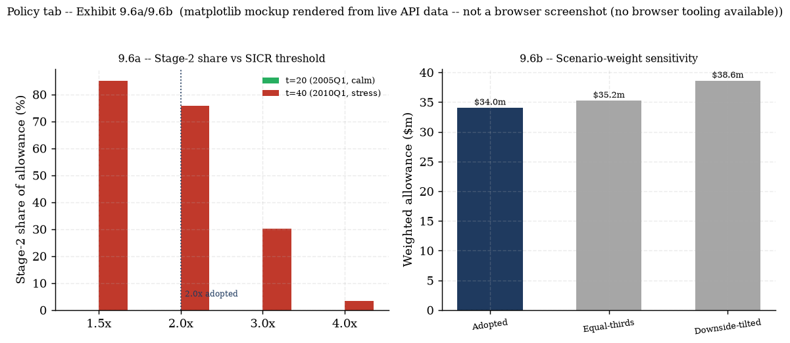
GET /api/policy/staging_sensitivity and
GET /api/policy/weights_table calls, 2026-07-19.DecisionHeader naming the governance question ("Where would you set the SICR
ratio threshold that triggers Stage 2?"), a static exhibit image, and a table of Stage-2 allowance share at
two reporting dates across four candidate thresholds. Endpoint: GET
/api/policy/staging_sensitivity.DecisionHeader ("which probability weighting... best reflects 'reasonable
and supportable' information?"), a bar chart, and a table of 3 canned weight sets with a Δ-vs-adopted pill
per row. Endpoint: GET /api/policy/weights_table — calling this endpoint appends THREE lines
to the audit trail (one per weight set), a deliberate governance choice so every reweighting this app has
ever shown a user is logged, even from this read-only convenience view.StageGuide.jsx, shared)<details> explainer (shared verbatim with the waterfall
panel's own footer, wherever WaterfallChart renders): Stage 1 = 12-month ECL (Σ over t≤4
quarters), Stage 2 = the SAME sum over the FULL remaining contractual life (up to 40 quarters), Stage 3
= LGD × current exposure (scenario-invariant by construction).app/ui/src/tabs/FreddieTab.jsx — the largest tab by panel count. "The DCR engine above runs on
a synthetic panel. This tab surfaces a second, real pipeline built on the actual Freddie Mac Single-Family
Loan-Level Dataset (SFLLD)... read-only, for comparison against the reported engine." One shared
how-to-read panel, six hero tiles, and eight numbered exhibits, none of which touch or mutate engine state
(every number here is parsed straight from outputs/freddie/**'s already-written
reports/CSVs/JSON — Chapter 11/12's territory, re-surfaced here as an app tab).
StatTiles, all from GET /api/freddie/summary: panel scale,
hazard OOT AUC (SFLLD vs DCR side by side), COVID regime treatment verdict, backtest worst miss ratio, LSTM
challenger OOT AUC vs champion, LGD excess-loss loading (SFLLD vs DCR).delta_uer_lag1's sign flip persisted) — "the dummy is doing its job" was contradicted by the
fit itself. This is documented, not smoothed over.ExhibitImage, id freddie_vintage_curves, endpoint
GET /api/freddie/exhibits, served at
/static/freddie/eda/exhibit1_vintage_curves.png.ExhibitImages: freddie_roll_rate_matrices ("Roll-rate
matrices -- GFC vs calm vs COVID") and freddie_calendar_time_series ("Calendar-time D90-entry
rate"), plus a net-read paragraph.GET /api/freddie/backtest. Styled with a distinct freddie-centerpiece
CSS class — the tab's own visual signal that this is the single most important exhibit on the page.miss_ratio = realized / predicted, easy to invert by mis-remembering. The 2007-12 finding is
explicitly framed as "the model was never wrong about its own coefficients, it simply never saw the crisis
coming because nothing in a frozen macro path could show it one" — this argues FOR scenario overlays
(IFRS 9 para 5.5.17), it is not a defect being confessed.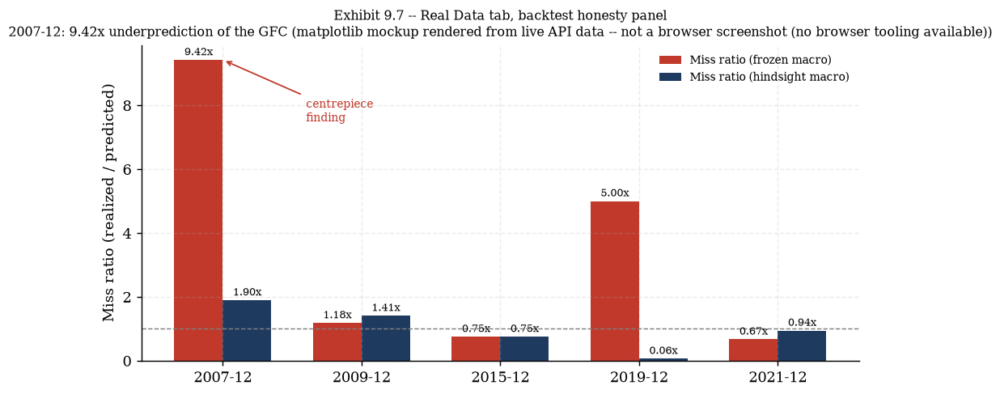
GET
/api/freddie/backtest call, 2026-07-19.ExhibitImage, id freddie_severity_cycle.InterpretationRow pattern as Exhibit 9.4. Endpoint: GET
/api/freddie/hazard.fico_s HR 0.3963; ltv10 HR 1.3806;
uer_lag1 HR 1.0996 — carries a live FRED badge ({POSTAL}UR), the genuinely
FRED-pulled state series Exhibit 9.4's national rows never carry; delta_uer_lag1 HR
1.9485; hpi_growth_lag1 table HR 0.0353 but Per-unit HR 0.9671 (the SAME
0.01-vs-1pp correction, computed here from the RAW coef column since this endpoint publishes coef
directly, unlike the DCR endpoint which only ever publishes HR=exp(coef)). Five loan-age spline
terms, seven occupancy/purpose/channel categorical dummies, and dti_s (DTI, no DCR counterpart —
see Exhibit 6 below) round out the 19.occupancy_status[T.S], loan_purpose[T.N], channel[T.C] — see their own
economic_channel text, verbatim from the report's "Fitted signs vs the priors" paragraph) — these
are documented honestly, not hidden by omitting the row.fico_s ↔ DCR fico_s,
expected "−" (matches); dti_s ↔ null DCR variable, "n/a (DCR has no DTI field at this
rung)" — an honest scope gap, not a missing-data bug; uer_lag1 ↔ DCR uer_lag1,
expected "+ (net, level+momentum)" — the SAME net-effect caveat as Exhibit 9.4's fit-stats panel applies
here too; cr(loan_age, df=5) ↔ DCR's spline, expected "hump (DCR peak ~12 quarters ~= 36
months)." The COVID caveat restates the reviewed exclude verdict verbatim.ExhibitImage, id freddie_state_heterogeneity,
title states its content: "2006-07 vintage default vs HPI drawdown" by state.ltv10 mechanism, shown here as cross-state
variation rather than a single pooled coefficient.ExhibitImage variant (this exhibit, plus Exhibits 1 and 4) is
a taller aspect-ratio CSS treatment for exhibits with more vertical detail (a state map, a long vintage-curve
family) — a purely presentational difference from the standard ExhibitImage, not a different data
source or contract.GET
/api/freddie/summary (the lstm object, reused — not a separate endpoint).app/ui/src/tabs/CopilotTab.jsx — the one tab where the agent IS the interface, not an
annotation layer on top of one. Three panels: the full chat panel, a live SSE trace feed, and a session-only
audit log. This is the only tab where MiniChatDock is deliberately absent (per §9.2 — it has its
own full-page chat instead).
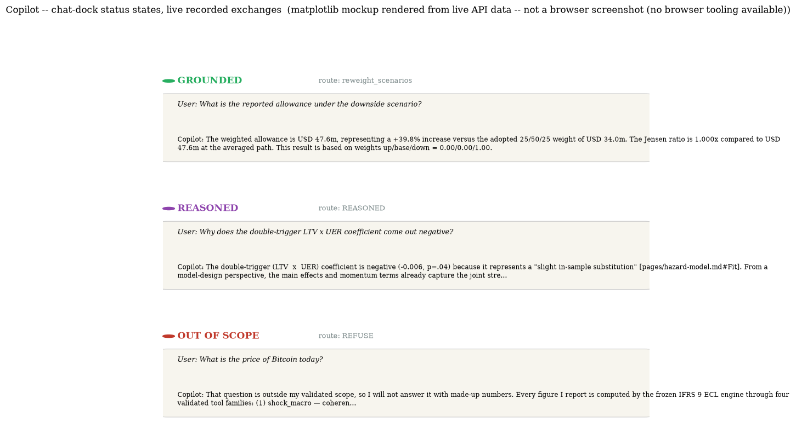
POST /api/agent/ask, live LangGraph agent, 2026-07-19) — one per governed outcome this app
surfaces to a user.ChatPanel.jsx, mode="full")POST /api/agent/ask, body {"question": "..."} (1–2000 chars), response
{answer, route, mode, trace}.reweight_scenarios, mode grounded, answer: "The
weighted allowance is \$47.6m, representing a +39.8% increase versus the adopted 25/50/25 weight of \$34.0m. The
Jensen ratio is 1.000x compared to \$47.6m at the averaged path. This result is based on weights up/base/down =
0.00/0.00/1.00." — the router correctly interpreted "the downside scenario" as a 0/0/1 reweight, not a lookup
of the existing scenario-table row. REASONED example: question "Why does the double-trigger LTV × UER
coefficient come out negative?" → route REASONED, mode reasoned, answer prefixed
"[REASONED — interpretation, not engine output]" then a cited, number-disciplined interpretation drawing on
6 documentation passages plus the baseline engine snapshot — no new engine number is stated. REFUSAL example:
question "What is the price of Bitcoin today?" → route REFUSE, mode refusal, a fixed
refusal message enumerating all 6 validated tool families as the alternative.contextLabel prop (unused on this full-page
instance, used by MiniChatDock's per-tab instances) would prefix the wire question with
[TabLabel].mode === 'reasoned', never string-match the prefix, is the documented
convention (docs/api_contract.md).AgentTrace.jsx)GET
/api/agent/stream (text/event-stream), replays the most recent /ask trace on
connect then streams new events as they happen; a connection-status badge (connecting/live/reconnecting) sits
in the panel's action slot.node — router (chosen
route + validated args), a tool-name node (shock_macro, query_model_docs,
analyze_data, ...; execution outcome + headline), narrator (grounding-check outcome,
number_check_passed), REASONED, or refusal. A badge per row
(ROUTER/TOOL/NARRATION/REASONED/REFUSAL/ERROR) colour-codes the node type at a glance.MAX_EVENTS), auto-scrolled to bottom on new events.mode/number_check_passed on a narrator event is a DIFFERENT, per-event
diagnostic from the top-level response's own mode field (§9.9) — easy to conflate since both are
named mode.AuditLog, inline component)ChatPanel's own onResult callback, not a server-side history
endpoint. Each row is collapsed by default; clicking expands the full answer text plus the raw trace JSON.GET history
endpoint for past /ask calls (the component's own comment states this explicitly); the PERSISTENT
audit trail a governance reviewer would actually rely on is the server-side
outputs/agent_log/tool_calls.jsonl file Chapter 8 documents, not this UI panel — this panel
is a convenience view of the current session only, not the system of record.Every panel doc block above says "standard explain icon" or similar — this section is where "standard"
is actually defined once, in full, so it is never re-derived per panel. Three affordances, all layered on top
of the SAME single endpoint, POST /api/agent/ask — requirement 11's own framing: "zero new
endpoints... every explanation... passes through the same tool-routing/Tier-2/Tier-3/refusal governance."
ExplainButton.jsx, useExplain hook)Panel heading and every StatTile carries a small circular
spark-icon button in its action cluster. Clicking it toggles an inline "answer strip" that renders UNDER the
panel body (never a modal, never squeezed into the header row — FINAL_SPEC §7.4). On click, it calls
buildQuestion() FRESH (so the question always reflects the panel's CURRENT payload, not a stale
snapshot from when the component first mounted), then askAgent(question). The composed question
follows a fixed wire-text convention (app/ui/src/api.js's explainPanelQuestion):
[explain:<panel_id> <live params>] <Exhibit label> — <panel title>: <CODE-GENERATED recap of the exact figures the panel is showing right now> What should I take from this?
panel_id is a short STABLE slug (e.g. waterfall, hazard_coefficients,
kpi_jensen_ratio) — the same value every render, never free text; live params (when present) are
key=value pairs reflecting the panel's current control state (e.g. t0=59 t1=60). The
recap sentence is built from the SAME payload object that rendered the panel — never hand-typed prose — so the
router always has the rendered numbers directly in front of it.
[explain:kpi_jensen_ratio] Jensen ratio: Jensen ratio is 1.0353x — scenario-weighted allowance \$34.0m vs allowance at the averaged macro path \$32.9m. What should I take from this?This is a real, reproducible question string — posting it to
POST /api/agent/ask live this
session routed to REASONED (a conceptual "what should I take from this" question, no fixed tool
computes a fresh number for it) and returned a cited interpretation grounded in the recap's own numbers.
The answer strip itself renders one of four states, matching a small state machine in useExplain:
loading ("THINKING," a warm-coloured status dot), done + refusal route ("OUT OF
SCOPE," muted dot, the refusal text shown), done + non-refusal route ("GROUNDED," good-coloured
dot, the answer text plus a ⚙ <route> citation chip), or network-error ("OUT
OF SCOPE — request failed (...)," muted dot — a network failure is deliberately shown in the SAME visual
register as a genuine refusal, never a scary red error state, so a flaky connection never looks like the
model did something wrong).
SelectionExplain.jsx).app-main (i.e. any of the six tab
bodies, but explicitly NOT inside an input/textarea/select/contenteditable, NOT inside either chat surface,
and NOT inside an already-open explain popover — inExcludedZone's exact exclusion list) shows a
small floating "Explain with AI" chip near the selection, after a 220ms debounce. Clicking it composes:
Explain, in the context of the <tab label> tab: "<selected text, trimmed, <=300 chars>"
<tab label> is one of the six tab display names; the selected text is quoted VERBATIM
(truncated at 300 chars, never paraphrased) so the router sees exactly what the user highlighted, with the
active tab as routing context.
buildExplainQuestion prop), selection-explain works on ANY visible
text in the main area — a stray sentence in a caption, a table cell, even the "Consultant's read" narrative
paragraph — which makes it the one AI affordance that requires no per-panel wiring at all to reach every
panel's prose.
Both MiniChatDock (present on 5 of 6 tabs, collapsed-first, per §9.2) and the Copilot tab's
own ChatPanel render every agent reply through the SAME 4-state vocabulary — the "grounding
vocabulary" graft the shipped design spec pulled from the losing terminal direction (§9.12):
| State | When | What it implies about trustworthiness |
|---|---|---|
| THINKING | request in flight
(status === 'thinking'/'loading') | no answer yet — nothing to trust or distrust |
| GROUNDED | response mode === "grounded"
— a numeric tool ran, or the cited docs retriever (query_model_docs) answered |
highest trust: every number traces to a frozen-engine tool call or a real cited passage |
| REASONED | response mode ===
"reasoned" — the REASONED route, a cited, number-disciplined LLM interpretation with NO fresh engine
computation | middle trust: grounded in retrieved passages + the engine's own baseline snapshot, but not a fresh computed number — treat as interpretation, not a new fact |
| OUT OF SCOPE | response mode ===
"refusal", OR a network/request failure | no claim made — refusal-by-design is a feature (Chapter 8), not a degraded answer; a network error is shown identically so a connectivity blip never reads as "the model refused" |
mode field POST /api/agent/ask already
returns (§9.8) — the UI adds zero new server-side logic, only a consistent visual vocabulary layered on top of
three pre-existing values. Prefer res.mode when present; fall back to a route-name regex
(isRefusalRoute/isReasonedRoute, matching REFUSE/refusal
case-insensitively, since the live LangGraph router and the offline fallback router spell refusal
differently) only for callers that predate the mode field.
summary.scenarios array the table itself renders, at
click time, via buildQuestion() called fresh — never a stale value and never a number the panel
isn't already showing.ExplainStrip's own state machine) so a flaky
connection is never visually confused with "the model did something dangerous or wrong" — refusal and
network failure share the same muted, non-alarming visual register, distinct from how a genuine engine error
elsewhere in the app (e.g. "Engine API offline") is shown.inExcludedZone explicitly excludes .chat-panel (and
.mini-dock, .explain-strip, .selection-explain itself) — highlighting
text inside an already-agent-mediated surface would be a confusing double affordance (explain-a-highlighted
chat-answer, inside a surface whose whole purpose is already asking the agent things) — the exclusion keeps
the two affordances non-overlapping.Every one of the 22 JSON endpoints docs/api_contract.md's own summary table lists, cross-walked
to which panel(s) in this chapter call it — built from the actual app/ui/src/api.js function
list, cross-checked against every tab file's own import statements.
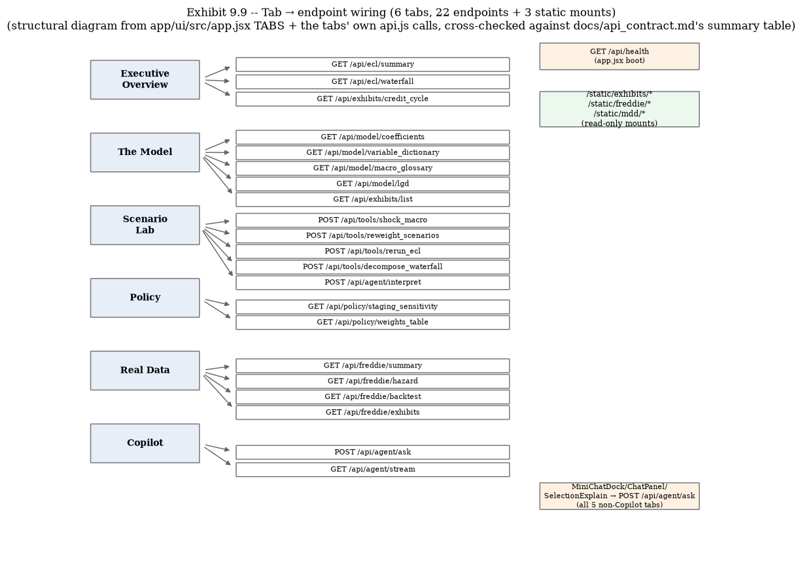
app/ui/src/app.jsx's
TABS array and every tab's own api.js calls, cross-checked against
docs/api_contract.md's own summary table.| Endpoint | Method | Tab(s) / component | Key contract fields consumed |
|---|---|---|---|
/api/health | GET | app boot (not tab-scoped) | status,
engine_warm, agent |
/api/ecl/summary | GET | Executive (tiles, stage mix, narrative, scenario table); app header | weighted_allowance, coverage, jensen_ratio, stage_mix, scenarios[] |
/api/ecl/waterfall | GET | Executive Exhibit 3; Scenario Lab Exhibit 2 (fallback mode) | components[], identity_gap, period_t0, period_t1 |
/api/exhibits/credit_cycle | GET | Executive Exhibit 4 | rho, points[] |
/api/tools/shock_macro | POST | Scenario Lab (Macro shock control) | shocked_allowance, delta_pct, waterfall_vs_baseline, applied_peak_deltas_pp |
/api/tools/reweight_scenarios | POST | Scenario Lab (Reweight control); Policy Exhibit 2 (3× per page load) | weighted_allowance, jensen_ratio,
delta_vs_adopted_pct |
/api/tools/rerun_ecl | POST | Scenario Lab (Rerun-by-segment control) | share_of_book_allowance_pct, stage_mix |
/api/tools/decompose_waterfall | POST | Scenario Lab (Decompose control) | same shape as /api/ecl/waterfall |
/api/agent/ask | POST | Copilot ChatPanel; MiniChatDock (5 tabs); ✦ explain icon (every tab); selection-explain chip (every tab) | answer, route, mode, trace[] |
/api/agent/stream | GET (SSE) | Copilot Agent trace panel | node-keyed event dicts |
/api/agent/interpret | POST | Scenario Lab (auto-interpretation card) | interpretation, grounded, mode |
/api/model/coefficients | GET | The Model Exhibits 1–2 | models.{default,prepay}, fit_stats |
/api/model/variable_dictionary | GET | The Model Exhibit 4 | preamble, rows[] |
/api/model/macro_glossary | GET | The Model Exhibit 5 | series[] |
/api/model/lgd | GET | The Model Exhibit 6 | cure_rate, oot_calibration, cure_stage_coefficients, severity_stage_coefficients |
/api/policy/staging_sensitivity | GET | Policy Exhibit 1 | thresholds, rows[], reading, image_url |
/api/policy/weights_table | GET | Policy Exhibit 2 | weight_sets[], scenario_totals |
/api/exhibits/list | GET | The Model Exhibit 3 (filtered), Exhibit 6 image grid (filtered) | exhibits[].{id, title, png_url, caption} |
/api/freddie/summary | GET | Real Data hero tiles; Exhibit 8 (lstm object) | panel, hazard, covid, lgd, backtest_headline, lstm, gate_verdict |
/api/freddie/hazard | GET | Real Data Exhibits 5–6 | coefficients[], dcr_sign_comparison[], covid |
/api/freddie/backtest | GET | Real Data Exhibit 3 | rows[], central_honesty_note, overlay_narrative |
/api/freddie/exhibits | GET | Real Data Exhibits 1,2,4,6,7,8 (image grids) | exhibits[].{id, title, png_url, caption, source} |
/static/exhibits/* | GET (static) | every ExhibitImage on
Executive/Model/Policy | raw PNG bytes |
/static/freddie/* | GET (static) | every ExhibitImage on Real
Data | raw PNG bytes |
/static/mdd/* | GET (static) | the header MDD link (all tabs) | MDD.html |
POST /api/agent/ask is called from FIVE distinct UI
surfaces (Copilot's own chat, 5 instances of MiniChatDock, every panel's ✦ icon, the
selection-explain chip, and indirectly by nothing else) — it is architecturally ONE endpoint with many wire-text
CONVENTIONS layered on top (§9.9), not five different endpoints. Similarly, GET
/api/policy/weights_table triggers three SEPARATE server-side reweight_scenarios calls
internally (one per canned weight set) purely to populate one page's table — a single page load can append
multiple audit-trail rows without the user ever touching Copilot.
A single-image deploy (HF Spaces Docker SDK, port 7860) — the full stage-by-stage Dockerfile
read is Chapter 10's job; this section is the narrower bridge every panel above actually depends on:
which build stage puts which static asset where, so a panel that renders fine locally does not silently 404 in
the deployed Space.
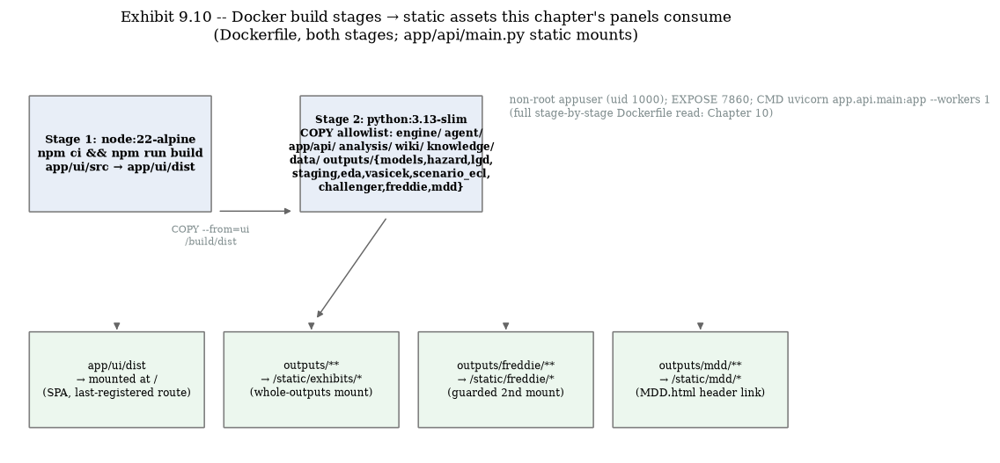
Dockerfile, both stages; app/api/main.py's static-mount block).node:22-alpine) runs npm ci
&& npm run build over app/ui/src, producing app/ui/dist — the SPA
every tab in this chapter lives inside. Stage 2 (python:3.13-slim) is the runtime: an
EXPLICIT COPY allowlist (never a broad copy + .dockerignore-exclude — Chapter 10's
own design-decision framing) brings in engine/ agent/ app/api/ analysis/ wiki/ knowledge/ data/
plus a curated slice of outputs/: models (pre-fitted joblib cache, ~9s warm start),
hazard, lgd, staging, eda, vasicek, scenario_ecl, challenger (the App v2 consultant exhibits —
everything The Model/Policy/Executive tabs' /api/model/*, /api/policy/*,
/api/exhibits/* endpoints parse), and outputs/freddie + outputs/mdd (the
Real Data tab's four endpoints and the header's MDD link). Finally COPY --from=ui /build/dist
./app/ui/dist pulls stage 1's build output into the runtime image.
| Static mount | Backs which panels | Guard |
|---|---|---|
/ → app/ui/dist | the entire SPA — every tab in this chapter | if (UI_DIST / "index.html").exists(), else a plain "not built yet" fallback response |
/static/exhibits/* → whole outputs/ tree | every
ExhibitImage on Executive/Model/Policy (17-row list); ALSO covers
outputs/freddie/** as a side effect, since this mount is the WHOLE outputs tree |
if OUTPUTS_DIR.exists() |
/static/freddie/* → outputs/freddie/ | Real Data tab's own
png_url convention (a SECOND, more convenient mount over files already reachable via
/static/exhibits/freddie/* above — the contract doc is explicit this is not because the files
are otherwise unreachable) | if FREDDIE_DIR.exists() |
/static/mdd/* → outputs/mdd/ | the header's MDD link (all tabs) | if MDD_DIR.exists() — 404s harmlessly if absent; the header link is wired unconditionally
regardless |
outputs/freddie/outputs/mdd
COPY lines specifically — "failed to calculate checksum... not found," despite both directories
verifiably present and their LFS objects resolving fine over HTTP at every attempted commit. The two lines
were TEMPORARILY commented out to restore the Space to RUNNING (the app boots fine without them — the guarded
if FREDDIE_DIR.exists()/if MDD_DIR.exists() mounts mean only the Real Data tab's own
calls would 404/500 until re-enabled). As of this chapter's writing (2026-07-19) both lines are ACTIVE again
in the Dockerfile — the eventual fix was a longer wall-clock wait for backend LFS propagation, not more
aggressive cache-busting (full retry timeline: outputs/gate/mdd_freddie_gate.md). The practical
lesson for anyone extending this app: a panel that reads live locally can still 404 in a freshly-deployed
Space if its backing outputs/ subtree hit exactly this kind of platform-side propagation race —
check the guarded-mount log line, not just the endpoint's own 200/404, before assuming a code bug.
Security posture (bridges Chapter 10 in full): non-root appuser (uid 1000), no
.env/data/raw/secrets baked into the image (.dockerignore-enforced,
CI-greps the saved image for key prefixes), OPENROUTER_API_KEY injected at RUN time only — absent
a key, the app still serves via the deterministic offline fallback router (a demoed feature, not a degraded
failure mode: refusal-over-guessing holds either way, Chapter 8).
Before any of the panels above existed in their current visual form, three FULL candidate design
directions were built and judged in parallel (outputs/design/{editorial,fintech,terminal}/, each
with its own design_spec.md + preview.html + rationale.md), then scored
against each other and merged into one binding spec, outputs/design/FINAL_SPEC.md — the document
every component in this chapter is actually built from.
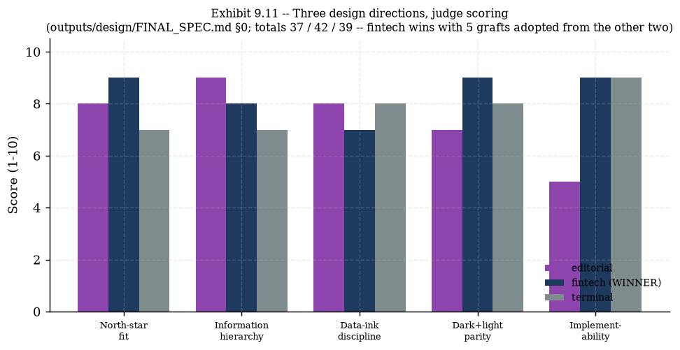
outputs/design/
FINAL_SPEC.md §0; totals 37/42/39 — fintech wins with 5 grafts adopted from the other
two).| Direction | Framing | Core bet | Where it risked failing (own rationale.md) |
|---|---|---|---|
| editorial — "The Consulting Deliverable" | Numbered exhibits, serif prose, a warm-paper report register — "stop looking like an internal analytics dashboard and start looking like the deliverable a consulting engagement actually produces." | Exhibit apparatus (numbered kicker + source footer) makes "never hallucinated numbers" visually structural, not just a promise. | A stronger stylistic bet than neutral (warm serif can read "considered" or "old-fashioned" depending on the viewer); the waterfall's own worked numbers didn't reconcile in the mock (flagged honestly, not hidden). |
| fintech — "The Modern Risk Platform" (WINNER) | Crisp dashboard register, one accent, hairline borders — "reads as the same visual register as the tools this audience already trusts... does not read as a student project or a chatbot demo with charts bolted on." | The ✦ icon on EVERY panel/tile (not tucked in a menu) + a citation chip on every agent surface, styled identically everywhere — "trains the eye that this app always shows its work." | Blue means both "the confident thing to click" (buttons/links/active tab) AND "this waterfall component increased the allowance" on the same screen — a real tension the spec mitigates (never colour-only encode direction) but doesn't fully resolve. |
| terminal — "THE PRECISION INSTRUMENT" | Regulatory/quant-report grammar — hairlines,
dense tabular figures, a raw SOURCE · /api/ecl/summary provenance stamp on every panel. |
The waterfall's explicit no-fake-scale rule: tiny floored bars + a footnote flag, rather than quietly rescaling a ~2.6-order-of-magnitude roll-forward to look calmer than the data is. | Coldness for a
non-quant reader; all-caps micro-labels trade legibility for density; a real engineering trap this exploration
caught and fixed (a position: fixed chat dock that silently covered live content at ordinary
viewport heights) — the fix (collapse-first, reserved bottom padding) is exactly graft 5 below. |
FINAL_SPEC.md, verbatim structure).
Exhibit N kicker + mandatory source/caption
footer on every chart/table panel — literally the <span class="exhibit-kicker"> and
<p class="panel-source"> this chapter's own Panel.jsx reads use, every panel
doc block above.GROUNDED/THINKING/OUT OF
SCOPE chat-dock status word + dot, tied to real /api/agent/ask states — §9.9's whole third
subsection.ADOPTED
tag Policy's Exhibit 2 table uses (§9.6), and units-in-column-header (never repeated per cell) throughout
every data table in this chapter.[explain:<panel> <params>] tag — §9.9's ✦-icon convention is literally
this graft.MiniChatDock collapsed-first on small viewports, every
tab's scroll container reserving ≥160px of bottom padding — directly traceable to the concrete engineering trap
the terminal rationale.md documents catching.One block per tab, cross-referenced to its documentation section above — the practical test of whether this chapter's coverage actually works as a reference, not just a read-through.
shock_macro there
updates ONLY that tab's own Result card and Allowance bridge; it does NOT change anything on the Executive
tab (the reported allowance, KPI tiles, and historical waterfall there are unaffected) — the
scenario-controls-vs-historical-waterfall distinction requirement 11 names explicitly.t0=59, t1=60 (the
latest single quarter); Scenario Lab's fallback default is t0=20, t1=40 (a long historical
window spanning most of the panel's origination period) — both are the SAME component, just different props,
per §9.3/§9.5.net_uer_effect_note caveat — the level coefficient alone (HR 0.693) is a collinearity artifact;
combined with the momentum term the NET effect is risk-INCREASING (hazard ratio 1.280 per pp).fred_series field (nullable) on
GET /api/model/coefficients//api/model/variable_dictionary (always null — DCR/
national is vendor-premerged, not live) or GET /api/freddie/hazard (populated with a real ID,
e.g. {POSTAL}UR, for the three genuinely state-level FRED-pulled rows) — or the dedicated
Macro data glossary (Exhibit 5, §9.4) for the full cross-model picture in one table.outputs/freddie COPY line
actually completed in this build (the guarded if FREDDIE_DIR.exists() static mount means a
failed COPY degrades exactly this way: the rest of the app boots fine, only /api/freddie/* and
/static/freddie/* fail) — a real incident this exact chapter documents, not a hypothetical.End of Chapter 9. Next: Chapter 10 — Docker & Deployment Guidebook (the
full stage-by-stage Dockerfile read this chapter's §9.11 only bridged to), building directly on
the linkage table above.